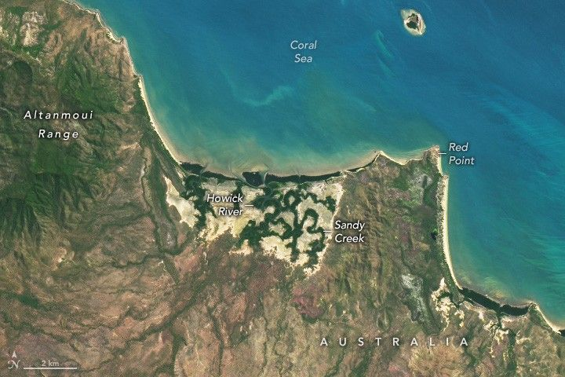

Australia’s Howick River
In northern Queensland, Australia, water flows across remote and varied terrain on its journey to the Coral Sea. One such area lies along the eastern coast of the Cape York Peninsula, where several key rivers wind across a narrow strip of land known as the Jeannie catchment.
Spanning more than 3,000 square kilometers (1,200 square miles), the catchment consists mostly of conservation and natural areas. This image, acquired by the OLI-2 (Operational Land Imager-2) on Landsat 9, highlights the central portion of the catchment around the Howick River within Cape Melville National Park.
The river begins its journey at higher elevations near the Altanmoui Range, where old, weathered sandstone atop hard metamorphic rock shapes the landscape. Springs within these sandstones contribute to the river’s flow. The catchment also benefits from substantial rainfall, though most of it occurs during the wet season, between December and March. This image—acquired on August 19, 2025—shows the area during what is usually one of the driest months of the year.
Downstream, the river enters the coastal floodplain. Here, the river meanders across eroded sandstone, forming a multi-channel system that weaves with White Water Creek and Sandy Creek across an expansive wetland. The catchment’s estuarine areas support an array of plant and animal life, from mangroves and salt marshes to crocodiles, sea turtles, birds, and important fishery species. Eventually, the rivers and creeks empty into the Coral Sea, home to the Great Barrier Reef.